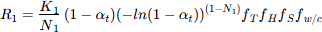
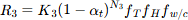
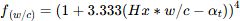
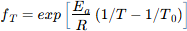
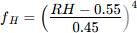
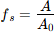

Modiified Parrot-Killoch approach - mPK
The rate of the hydration of the cement clinkers (C3S, C2S, C3A, C4AF) is described by the set of empirical equations as proposed by Parrot and Killoh (1984) and presented in Lothenbach and Winnefeld (2006). The rate equation for clinker phase j is:

Three equations are used to calculate the rated R1, R2, and R3 as a function of hydration degree of the individual clinker (αt) and the lowest rate is considered as the rate-controlling step:



where the first, second and third equations represent, respectively, nucleation and growth, diffusion and formation of the hydration shell. fT, fH, fw/c, and fS are correction factors for, respectively, temperature, hydration degree, water/cement ratio, and Blaine surface area.
fw/c is defined as

if αt > Hx*w/c, otherwise fw/c is 1 with Hx and empirical parameter.
The correction factor for temperature, fT, is defined as:

with T is the temperature, and T0 is the reference temperature (both in K), and EA is the enthalpy [J/mol].
Following two functions are not implemented yet:

where RH is the relative humidity, and:

with A Blain fineness and A0 reference area (385 m²/kg).
Created with the Personal Edition of HelpNDoc: Upgrade your help files and your workflow with HelpNDoc's WinHelp HLP to CHM conversion